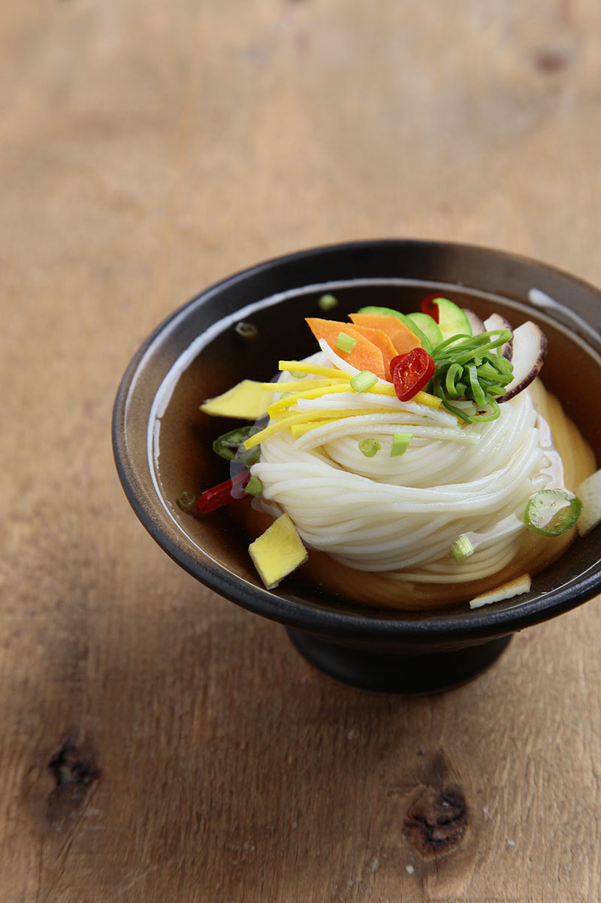

푸드스타일링, 어떻게 하는 걸까?
/
국수
-
밀국수는 국수장국, 온면이라고 하는데 가는 밀국수를 더운 장국에 말아서
고명을 얹은 음식으로 특별한 날에만 먹을 수 있는 귀한 음식이었다.
예로부터 국수는 장수를 기원하는 마음이 담긴 음식이다.
출처: 문화콘텐츠닷컴 (문화 원형 백과 재미있는 세시음식 이야기), 2010., 한국콘텐츠진흥원
-
이번에 알려드릴 푸드 스타일링은 국수입니다.
국수는 우리가 쉽게 접할 수 있는 음식입니다.
우리가 사진으로 보는 국수는 정갈하고 예쁘게 담겨있지만,
실제 우리가 해 먹는 국수는 국물에 면이 풀어헤쳐져 있습니다.
왜일까요?
오늘은 그 국수의 비밀을 알려드리려고 합니다.
-
Noodle Styling
- 면을 실로 직경이 약 15mm가 되도록 묶어서 삶습니다.
- 삶을 때 서로 달라붙지 않도록 젓가락으로 잘 저어줍니다.
- 삶은 후 찬물에 담가 잘 헹궈 가지런히 준비한다.
- 그릇에 면을 깔끔하게 정리하여 돌려 담습니다.
- 육수는 맑은 물에 간장을 이용하여 색을 조절합니다.
- 고명을 면 위에 가지런히 얹습니다.
- 국수에 육수를 조심스럽게 부어 면이 흐트러지지 않도록 합니다.
- 비빔국수의 경우 고추장 소스는 물엿을 넣어 윤기나도록 준비하고,
채소는 얼음 물에 담갔다가 건져 싱싱하게 연출합니다.
면의 양은 3단 정도로 나누어야 합니다.
(가장 아래에 가장 많은 양, 중간에는 적당한 양, 맨 위에는 보다 조금인 양)
직경 15mm은 어디까지나 예로 알려드리는 것입니다.
그릇의 크기에 따라 국수의 양을 조절하여 삶아야 합니다.
국수를 실로 묶을 때는 가운데에 묶지 않고
국수 길이의 위에서 2~3cm 정도 되는 곳에 묶어줍니다.
혹시나 삶으면서 실이 풀리지 않도록 주의합니다.
면도 끊어지거나 눌어붙지 않게 잘 저어주어야 합니다.
면의 익힘 정도는 평소에 삶을 때보다 약간 덜 익혀줍니다.
국수의 전분기가 없어지도록 살살 흔들어가며 깨끗이 헹궈줍니다.
너무 빡빡 문지르면서 헹구지 않아도 됩니다.
헹구면서 면이 끊어지거나 하지 않게 주의합니다.
물은 차가우면 차가울수록 좋습니다.
어느 정도 헹구면 국수를 물에 담아 묶은 부분의 위에서 아래로 빗어둡니다.
국수의 입체감을 위해 가장 많은 양부터 차례대로 합니다.
면을 돌려 담는 방법에는 여러 가지가 있습니다.
저 같은 경우에는 엄지손가락을 이용해 국수를 묶어준 부분이
안쪽으로 가도록 감아줍니다.
면이 풀어지는 끝부분은 잘 보이지 않게 안쪽으로 약간 넣어줍니다.
그릇 안쪽으로부터 모아주는 형태로 말아 올려 똬리를 틀듯이 담으면 됩니다.
아니면 면을 두 갈래로 나눠 꼬아서 연출해줘도 됩니다.
다양한 방법으로 연출을 시도해보세요.
사진 촬영을 해보고 간장의 양을 조절하면 됩니다.
조명을 사용하여 촬영하면 눈으로 보는 것과 다르게 사진에서 나오기 때문입니다.
수정해야 할 경우, 일회용 주사기 등을 이용하여 국물을 빼줍니다.
국수를 삶기 전에 고명을 어떻게 올릴지 어떤 고명을 올릴지
국수의 어떤 부분을 보여줄 건지 꼭! 정해놓고 들어가야 합니다.
국수의 면이 금방 불기 때문에 속도가 중요합니다.
철저하게 계획을 세워놓고 들어가야 합니다.
또한, 고명의 경우 국수를 삶기 전에 미리 다 조리해놓고
원하는 모양으로 완벽하게 준비해야 합니다.
고명 쪽으로 국물을 절대 붓지 않습니다.
그릇 가장자리 쪽으로 천천히 육수를 부어줍니다.
-
Styling
- 국수는 따뜻한 음식이기 때문에 따뜻한 분위기로 연출해 줍니다.
- 차분한 컬러의 그릇.
- 보기 좋게 고명 올리기.
사진의 국수처럼 따뜻한 경우, 배경 또한 따뜻한 분위기로 연출하는 것이 좋습니다.
위의 경우, 따뜻한 우드톤의 배경으로 연출해줬습니다.
따뜻한 톤의 패브릭이나, 우드톤의 젓가락과 함께 연출해줘도 좋습니다.
고명에 여러 가지의 컬러가 들어가기 때문에
그릇의 경우 너무 화려한 무늬가 들어가거나 원색 계열의 튀는 컬러는 좋지 않습니다.
차분하고 무난한 컬러의 그릇이 잘 어울립니다.
원목 질감의 그릇보다는 한식의 분위기를 살리는 도자기나 유기 등이 좋습니다.
고명은 같은 컬러가 겹치지 않게 담는 것이 좋습니다.
같은 컬러가 겹치더라도 질감을 다르게 하면 낫습니다.
고명의 크기 또한 국수의 양, 그릇의 크기에 따라 조절해야 합니다.
-
Example
메밀국수
위와 같은 방법을 응용해 만든 여름에 잘 어울리는 시원한 메밀국수 입니다.
같은 방법을 사용하되 면과 고명만 바뀌면
전혀 다른 메뉴가 되니 위를 기초로 다양하게 응용해 보세요.
메밀국수는 위의 국수보다 머리 땋듯이 면을 땋아줬더니
면이 무슨 똬리를 틀고 앉아있는 것 같네요;;
메밀국수의 스타일링은 시원함에 초점을 맞춰 대리석 배경과
스트라이프 무늬의 천을 사용했습니다.
* 참고하면 좋을 한국 음식의 색/고명
- 1) 한식의 경우 고명은 오방색을 기본으로 합니다.
- 2) 음식을 담을 때는 색을 맞춰 3,5,7,9의 홀수로 맞춰 담습니다.
- 3) 고명은 한 가지 또는 여러 가지를 얹어 음식의 맛을 내며
아무도 손을 대지 않았다는 것을 의미합니다.
- 4) 요리의 배색은 계절이나 경조, 의례에 따라 변화시킬 필요가 있습니다.
- 5) 여름엔 시원함을 느끼게 해주는 녹색, 백색계를 많이 사용하고
가을, 겨울엔 추위가 더해 감에 따라 난색계를 많이 사용합니다.
- 6) 적색은 적게 쓸수록 포인트가 증가합니다.
-
이번에 알려드린 국수 스타일링 방법으로 고명의 배치나 면의 모양을 다르게
해서 다양한 국수 스타일링을 연출해보세요!
쌀국수나 냉면 등의 다른 면류도 위의 방법을 응용하면 된답니다.